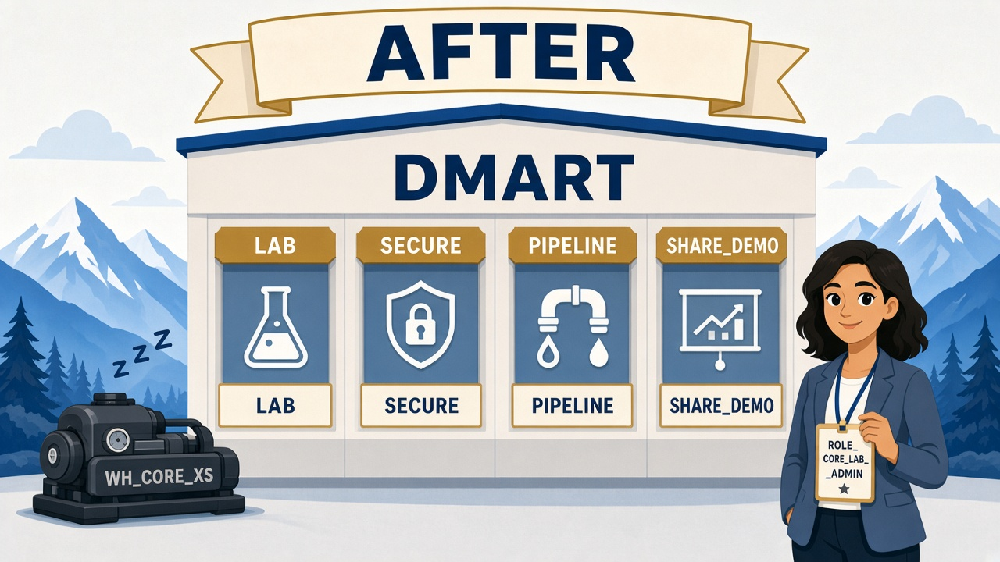

Read every Teach first section before you copy SQL.
This lab is the empty store building — warehouse, database, folders (schemas), and your lab-admin badge.
Story optional but Morgan makes more sense if you skim it.
1
Picture first. Look at BEFORE/AFTER → read the comic → then run tiny SQL.
If a paragraph feels heavy, skip to the next comic strip — Dev explains it out loud for you.
Already saw “ROLE_CORE_LAB_ADMIN is not assigned”?
You created the role but never attached it to your login. As ACCOUNTADMIN, run
sql/00_privilege_repair.sql (or the Step 1b block below), then open a new worksheet and continue.
Business problem
DMart has no dedicated Snowflake home. Files and half-built tables live in random places.
Morgan (store ops) says: “Give us one building, a cheap engine, and a clear owner — today.”
Solution you will build
Database DMART, warehouse WH_CORE_XS, lab role
ROLE_CORE_LAB_ADMIN, schemas LAB / SECURE / PIPELINE / SHARE_DEMO,
and sample customers + orders for later labs.
Before No DMart home — files and tables everywhere.

After One building DMART + WH_CORE_XS + lab-admin badge.
Episode 00 · Start here
Morgan wants a building. Dev draws one.
MorganManager — deadline
I hear “data platform” and see twenty random tables. Where does DMart’s data live?
DevCoach — explains why
Think of a building. Database = the building name DMART. Schemas = rooms. Warehouse = the engine that runs when we ask questions — then sleeps so we don’t burn money.
If you remember only one picture today: building → rooms → engine.
See it — don’t memorize definitions
Container
Database = the building
Everything DMart owns lives inside one named database.
random tables → DMART
Folder
Schema = a room
Groups related tables — like floors in the building.
LAB = practice floor SECURE = locked room
Engine
Warehouse runs queries
Compute you turn on — credits while it’s running. It does not store your tables.
USE WAREHOUSE WH_CORE_XS; X-Small · auto-suspend 60s
Badges
Two roles today
Mayor bootstraps; Priya wears lab-admin badge for daily labs.
ACCOUNTADMIN (5 min) → ROLE_CORE_LAB_ADMIN
ACCOUNTADMIN vs lab admin — why both?
Snowflake separates who can spin up account-wide powers from who runs the store day to day.
Only ACCOUNTADMIN can create warehouses and stamp “CREATE ROLE” on Priya’s badge.
After bootstrap, Priya wears ROLE_CORE_LAB_ADMIN — same person, narrower powers (exam-realistic).
1 · MayorACCOUNTADMINcreate WH + stamp lab admin
2 · BuilderROLE_CORE_LAB_ADMINown DB + schemas + tables
3 · Exam youDaily labsnever live as ACCOUNTADMIN
Before Step 1
Kai: “Is the warehouse where my data sits?”
KaiAnalyst — still learning
So if I create a bigger warehouse, I get more storage space, right?
DevCoach
Nope. Warehouse = compute engine (CPU). Your tables live in the storage layer. Exam trap #1: never say “the warehouse stores data.”
1 Bootstrap as ACCOUNTADMIN (warehouse + role + powers)
What this does: Creates the cheap warehouse, Priya’s lab-admin role, and the account grants later labs need (tasks, shares, policies).
SQL · bootstrap objects (ACCOUNTADMIN)
USE ROLE ACCOUNTADMIN;
CREATE WAREHOUSE IF NOT EXISTS WH_CORE_XS
WAREHOUSE_SIZE = 'XSMALL'
AUTO_SUSPEND = 60
AUTO_RESUME = TRUE
INITIALLY_SUSPENDED = TRUE;
CREATE WAREHOUSE IF NOT EXISTS WH_CORE_M
WAREHOUSE_SIZE = 'MEDIUM'
AUTO_SUSPEND = 60
AUTO_RESUME = TRUE
INITIALLY_SUSPENDED = TRUE;
CREATE ROLE IF NOT EXISTS ROLE_CORE_LAB_ADMIN;
GRANT USAGE, OPERATE ON WAREHOUSE WH_CORE_XS
TO ROLE ROLE_CORE_LAB_ADMIN WITH GRANT OPTION;
GRANT USAGE, OPERATE ON WAREHOUSE WH_CORE_M
TO ROLE ROLE_CORE_LAB_ADMIN WITH GRANT OPTION;
GRANT CREATE DATABASE ON ACCOUNT TO ROLE ROLE_CORE_LAB_ADMIN;
GRANT CREATE ROLE ON ACCOUNT TO ROLE ROLE_CORE_LAB_ADMIN;
GRANT MANAGE GRANTS ON ACCOUNT TO ROLE ROLE_CORE_LAB_ADMIN;
GRANT EXECUTE TASK ON ACCOUNT TO ROLE ROLE_CORE_LAB_ADMIN;
GRANT CREATE SHARE ON ACCOUNT TO ROLE ROLE_CORE_LAB_ADMIN;
GRANT APPLY MASKING POLICY ON ACCOUNT TO ROLE ROLE_CORE_LAB_ADMIN;
GRANT APPLY ROW ACCESS POLICY ON ACCOUNT TO ROLE ROLE_CORE_LAB_ADMIN;
GRANT APPLY TAG ON ACCOUNT TO ROLE ROLE_CORE_LAB_ADMIN;
✓ Warehouse + role created — role is not on your user yet (next step)
Before Step 1b — do not skip
Creating a role ≠ wearing the role
KaiAnalyst
I ran CREATE ROLE. Why does USE ROLE ROLE_CORE_LAB_ADMIN explode?
DevCoach
Because Snowflake never auto-pins new roles to your login. You must GRANT ROLE … TO USER. We use CURRENT_USER() so you don’t mistype the name.
1b Attach the lab-admin role to your user
What this does: Pins ROLE_CORE_LAB_ADMIN to the login you’re using right now.
Skip this and every later lab’s USE ROLE ROLE_CORE_LAB_ADMIN fails.
SQL · grant role to you (ACCOUNTADMIN)
USE ROLE ACCOUNTADMIN;
SET uname = (SELECT CURRENT_USER());
GRANT ROLE ROLE_CORE_LAB_ADMIN TO USER IDENTIFIER($uname);
-- Proof: you should see ROLE_CORE_LAB_ADMIN in the list
SHOW GRANTS TO USER IDENTIFIER($uname);
Snowsight tip
After the grant, open a new worksheet (or refresh the role dropdown) before Step 2.
Still broken? Run sql/00_privilege_repair.sql as ACCOUNTADMIN.
✓ SHOW GRANTS lists ROLE_CORE_LAB_ADMIN for your user
Before Step 2
Why leave ACCOUNTADMIN?
PriyaYou
Can’t I just stay ACCOUNTADMIN for the whole course? It’s easier.
DevCoach
Easier ≠ correct. Least privilege is the rule. Break-glass for bootstrap; lab admin for daily work.
2 Open the building as lab admin
What this does: Creates DMART and the four schemas you’ll reuse all course. Only works after Step 1b.
SQL · database + schemas
USE ROLE ROLE_CORE_LAB_ADMIN;
USE WAREHOUSE WH_CORE_XS;
CREATE DATABASE IF NOT EXISTS DMART;
USE DATABASE DMART;
CREATE SCHEMA IF NOT EXISTS LAB;
CREATE SCHEMA IF NOT EXISTS SECURE;
CREATE SCHEMA IF NOT EXISTS PIPELINE;
CREATE SCHEMA IF NOT EXISTS SHARE_DEMO;
SELECT CURRENT_USER(), CURRENT_ROLE(), CURRENT_WAREHOUSE(), CURRENT_DATABASE();
✓ Role = ROLE_CORE_LAB_ADMIN · WH = WH_CORE_XS · DB = DMART
3 Load sample customers (tiny)
What this does: Puts five customers with PII into LAB.CUSTOMERS so later security labs have something real to lock.
SQL · sample customers
USE SCHEMA LAB;
CREATE OR REPLACE TABLE CUSTOMERS (
CUSTOMER_ID NUMBER,
FULL_NAME STRING,
EMAIL STRING,
PHONE STRING,
STATE STRING,
ID_LAST4 STRING
);
INSERT INTO CUSTOMERS VALUES
(1, 'Asha Patel', 'asha.patel@example.com', '+91-98200-01001', 'MH', '4821'),
(2, 'Ravi Shah', 'ravi.shah@example.com', '+91-98200-01002', 'MH', '9033');
Finish the other three rows + orders from sql/00_sample_data.sql (or run that whole file).
SQL · proof
SELECT * FROM CUSTOMERS ORDER BY CUSTOMER_ID;
✓ Rows with emails and ID_LAST4 visible while you’re still lab admin
Exam presses further — say these out loud
Basics got you the workshop. Cover each answer before you open it. These are Core traps.
Q1. Does a virtual warehouse store table data?
Say: No. Warehouses are compute. Table data lives in the storage layer as compressed micro-partitions. Bigger warehouse ≠ more storage.
Q2. Why auto-suspend 60 seconds — what’s the failure mode?
Say: Saves idle credits. Too aggressive + chatty short queries = resume latency. No suspend = idle burn. Tune suspend separately from size.
Q3. Why not leave every object under ACCOUNTADMIN?
Say: ACCOUNTADMIN is break-glass. Daily DDL under an owned platform/lab role matches least privilege and how the exam frames RBAC.
Q4. Database vs schema — which is the “building”?
Say: Database is the building; schemas are rooms/folders. You can have many schemas in one database without splitting billing or replication scopes.
Q5. What three layers must you name on Architecture questions?
Say: Database Storage, Query Processing (virtual warehouses), and Cloud Services (auth, metadata, optimizer). Lab 01 drills this harder.
Priya’s wrap-up (say this out loud)
“DMart had no Snowflake home. As ACCOUNTADMIN I poured the foundation: warehouse WH_CORE_XS with auto-suspend,
role ROLE_CORE_LAB_ADMIN, and database DMART with LAB, SECURE, PIPELINE, and SHARE_DEMO schemas.
I loaded sample customers with PII so we can prove security later.
Outcome: one owned playground, near-zero idle cost, ready for architecture Lab 01.”
Next
Lab 01 is why the bill splits into storage and compute. Don’t skip it.